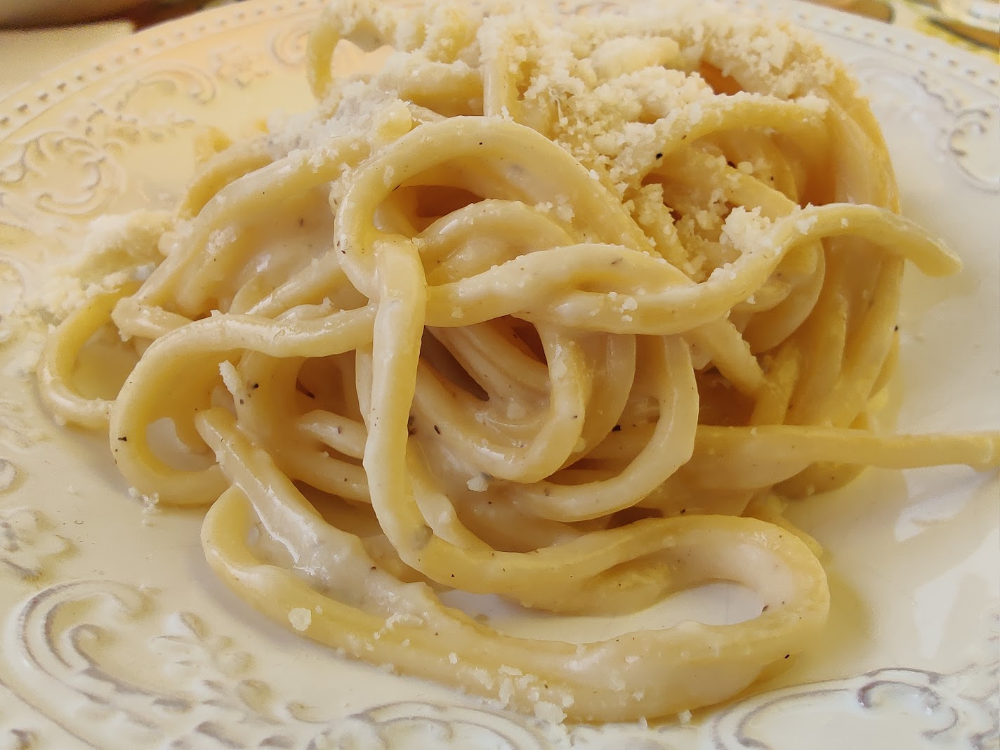

Home
Cacio e Pepe

Description
This cacio e pepe recipe makes for an easy, and efficient lunch.
Ingredients
- 200g bucatini or spaghetti
- 25g butter
- 2 tsp whole black peppercorns, ground
- 50g pecorino or parmesan, finely grated
Steps
-
Cook the pasta in salted boiling water for 2 minutes less than stated on
the packet.
-
Meanwhile, melt the butter in a medium frying pan over a low heat, then
add your ground black pepper, and toast for a few minutes.
- Drain the pasta, keeping 200ml of the pasta water.
-
Tip the pasta along with 100ml of pasta water into the pan with the
butter and pepper.
-
Toss briefly, then sprinkle the pecorino/parmesan evenly, waiting 30
seconds to let it melt before stirring.
-
Add a splash of pasta water and serve with a grating of black pepper.